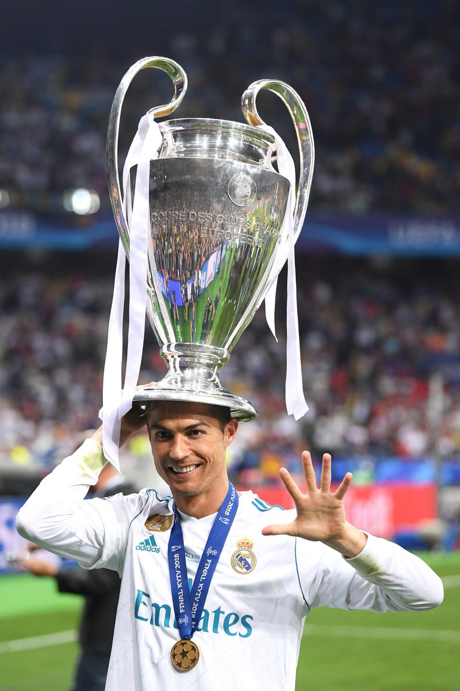
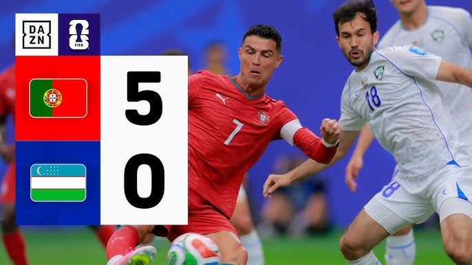
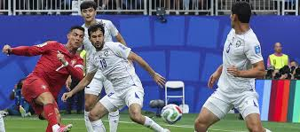

Cristiano Ronaldo es uno de los futbolistas más reconocidos y exitosos de todos los tiempos.
Nació el 5 de febrero de 1985 en Funchal, una ciudad de la isla de Madeira, Portugal.
Desde muy pequeño mostró un gran interés y talento para el fútbol.
Comenzó su formación en equipos locales antes de ingresar al Sporting de Lisboa.
Su habilidad, velocidad y dedicación llamaron rápidamente la atención de los entrenadores.
En 2003 fichó por el Manchester United, donde empezó a destacar a nivel internacional.
Durante su etapa en Inglaterra ganó importantes títulos y premios individuales.
En 2009 se unió al Real Madrid por una cifra récord para la época.
Con el club español alcanzó algunos de los mayores logros de su carrera.
Se convirtió en el máximo goleador histórico de la institución.
Ganó varias Ligas de Campeones y campeonatos nacionales.
También obtuvo múltiples Balones de Oro gracias a su extraordinario rendimiento.
En 2018 pasó a jugar en la Juventus de Italia.
Allí continuó demostrando su capacidad goleadora y liderazgo.
Posteriormente regresó al Manchester United antes de emprender un nuevo desafío.
Actualmente juega en el Al Nassr de Arabia Saudita.
br
Con la selección portuguesa ha conseguido importantes éxitos internacionales.
Entre ellos destaca la conquista de la Eurocopa 2016.
Es admirado por su disciplina, ética de trabajo y mentalidad competitiva.
Su impacto en el fútbol lo ha convertido en una leyenda e inspiración para millones de personas en todo el mundo.

Cristiano Ronaldo es una de las mayores leyendas en la historia del fútbol. Nació en Portugal y ha tenido una carrera llena de éxitos y récords. A lo largo de los años ha jugado en algunos de los clubes más importantes del mundo. Su capacidad goleadora, disciplina y liderazgo lo han convertido en un referente del deporte. En el Mundial de 2026 participa con la selección de Portugal en lo que se espera sea su última Copa del Mundo. Millones de aficionados siguen apoyándolo mientras busca cerrar su trayectoria mundialista de la mejor manera posible.


Portugal arrasa con Uzbekistan 5-0 con dos goles de CR7
Portugal goleó a Uzbekistán por 5-0 en la segunda fecha del grupo K del Mundial 2026 y así mantiene las expectativas para clasificar como primero a los 16avos de final.
Mira el resumen del partido
CR7 es el unico jugador en meter gol en 6 mundiales distintos
Con el doblete ante Uzbekistan Cristiano se convierte en el primer y unico jugador en marcar goles en 6 mundiales distintos.
Mira todos los goles en mundiales
CR7 es el maximo goleador de la champions league
Cristiano Ronaldo es el maximo de goleador historico de la champions con 140 goles en esta competición.
Mira todos los goles en champions